Introduction
AutoTheme is an HTML Theme System currently supporting the MD-Pro, PostNuke, PHP-Nuke, CPG-Nuke and eNvolution Content Management Systems (CMS). The current theme systems require you to be somewhat familiar with PHP and the CMS architecture. If you are not very familiar with PHP and/or the CMS, AutoTheme removes the complexity while providing extreme flexibility and power.
AutoTheme's primary benefit is providing users the ability to create themes for their CMS in HTML using their favorite editor, with no use of PHP. In addition, AutoTheme provides easy customization of every part of your CMS site; including block display, custom templates for the Home Page, User Pages and Admin Pages and individual modules pages. The addition of AutoBlocks provides unlimited locations for your blocks, beyond Left, Right and Center. All AutoTheme settings are easily configured from a graphical administration interface that is integrated into the CMS.
New to this version of AutoTheme are Extras. Extras are plug-ins that do very nifty things such as, a first visit site entry page, change a theme on a specific date or at specific times of day and search engine optimized URLs.
Many hundreds, if not thousands of themes are available for AutoTheme. There are quite a few commercial themes, however the vast majority are free. AutoTheme themes are not CMS specific and are usable on any of the AutoTheme supported CMSs.
The following AutoTheme tutorials are also available at http://spidean.mckenzies.net, as well as translated versions at various other sites:
ü Theme Creation - Part 1: Creating Theme Ready HTML from a Graphic Template
ü Theme Creation - Part 2: Creating Theme Ready Templates from HTML
ü Theme Creation - Part 3: Configuring a Theme in AutoTheme Administration
Features Overview
* Add list of features
Multi-Sites
If your CMS supports multi-sites, then they are automatically supported in AutoTheme. AutoTheme themes may be included in the main themes/ directory of your CMS site or in a themes/ directory of a multi-site directory with no modifications to the theme or AutoTheme code. When using an AutoTheme theme in a multi-site directory, only that site has the ability to use the theme. When in the main themes/ directory, all sites are able to use the theme. As stated in the CMS multi-site documentation, do not include a theme with the same name in your main themes directory and a multi-site themes directory.
Installation
There are two main ways to install AutoTheme. Regardless of which way you choose, it is important to remember that the compressed distribution file (.zip, .tar.gz or .sit) contains all of the directories and files needed and it is laid out in the exact manner that it should be installed. There is no need to create directories or worry about the proper placement of files.
FTP
As most hosting providers supply FTP access, this is likely the most common way to install CMS modules, including AutoTheme.
ü Extract the compressed distribution file (.zip, .tar.gz or .sit) to your local computer
ü FTP upload the entire contents to your CMS root directory (accept any directory overwrite warnings. These directories are not being overwritten. The warnings are generated because the directory already exists, but this is fine.)
Shell
If your hosting provider supplies Secure Shell (SSH) or Telnet access, this may be a quicker and easier installation method.
ü Copy the compressed distribution file (.zip, .tar.gz or .sit) to your CMS root directory (the main directory where your CMS is installed)
ü Extract the compressed distribution file
o unzip file.zip (zip example)
o tar zxf file.tar.gz (tar.gz example)
After installing, go to your CMS Administration, Modules, and follow the instructions for your CMS for activating a module.
File Permissions
IMPORTANT: The “modules/AutoTheme/autotheme.cfg” and any “theme.cfg” in your theme directories, as well as the themes/ directory itself must be writeable by the web server in order to use the graphical administration interface!
Template compiling increases the speed of your site and requires that “modules/AutoTheme/_compile/” be writable as well.
The easiest way in Unix/Linux with shell access is to change to the CMS root directory and then:
· CHMOD 777 modules/AutoTheme/autotheme.cfg
· CHMOD 777 modules/AutoTheme/_compile/
· CHMOD 777 themes/YOURTHEME/theme.cfg
· CHMOD 777 themes/
To set the permissions on all applicable files, you may use the following shell script:
· sh modules/AutoTheme/autotheme.sh
If using FTP, most FTP programs have an option to set these permissions on files. Windows should not be an issue unless you have set custom file or directory permissions.
CMS Overview
Regardless of how themes are built, a base understanding of the CMS is needed. Standard CMS installations make use of four main elements in the layout. Left Blocks, Center Blocks, Right Blocks and Modules. You can create and modify the blocks via the CMS's administration menus, but the theme controls when, where and how these four elements are displayed.
Two additional elements are used for the news, the Summary Article (displayed on the Home Page) and the Full Article (displayed when the user reads the Full Article usually by clicking Read more...).
Example Layout
|
Site Name |
|
Welcome |
|||||||||||||||||||
|
|
|
|||||||||||||||||||
|
|
|
|
Figure 1 - CMS Layout
In addition, AutoTheme provides AutoBlocks, unlimited block positions in addition to Left, Right and Center. With AutoTheme you have full control over when and how to display Left, Right, Center and AutoBlocks blocks.
Example Layout with AutoBlocks
|
|||||||||||||||||||||||||||||||||||||||||||||||||||||||||||||||
Figure 2 - CMS Layout with AutoBlocks
AutoTheme Overview
AutoTheme is a Theme System, not a theme. The included HTML templates and images may be used as is or modified to fit your needs, but they are only examples. You can use your own creativity to build a custom theme using the AutoTheme functionality. The template files in your AutoTheme themes can be named anything you wish and can be organized in any directory structure under your theme directory. Your site may require fewer files or more files.
File Overview
The HTML templates that you use for your theme may be named anything you wish.
Required Files
This is a CMS file and is required to properly load the theme. Make sure to use an AutoTheme theme.php file available in any of the themes included with AutoTheme.
This file contains the entire configuration for your AutoTheme theme. This file is now created from the AutoTheme Administration and all you have to remember is to make sure the file permissions are 777 or writable by the web server. You will not need to do anything with this file, except maybe back it up before modifying the theme.
This file is the foundation of our AutoTheme theme. It is basically an HTML file that defines the page layout and contains AutoTheme commands (a.k.a. tags) that we will talk about later. You can easily use any HTML layout file for this, but due to the dynamic nature of the data it will display, one must be very careful to make sure the design allows for this expansion.
Custom Block Templates
Each block position may also have its own template (Left, Center, Right and the AutoBlocks). Additionally, every block has a unique name that is configured in CMS Administration, Blocks. You can define custom templates that are used only for that specific block.
These files contain the HTML for the different block positions and are called from the “theme.html” template (or any other template you have selected). Think of these blocks as includes which are called by the “theme.html” template using AutoTheme tags.
Custom Module Templates
Each module or page of your site may have its own template, so that each page that is displayed is fully customizable. Every module has a unique name that is configured in the CMS Administration, Modules. You can define custom templates, style sheets, images and colors and head content that are used only for that specific module. In addition, you can control what blocks are displayed on a per module or page basis. In addition to the modules that you have installed on your site, AutoTheme provides the ability to define separate templates for: Home Page (regardless of what module is there), Administration Pages, User Pages (My Account, etc.).
News Templates
By default there are two templates that display News articles:
ü article.html
ü summary.html
These files are very similar to blocks in concept and are basically includes. The “summary.html” will appear on the main News page of the CMS (normally the home page) and “article.html” will be called if the extended news is invoked (i.e., after the “read-more” link is clicked in a summary article). “summary.html” is also used as the summary in the Topics module.
Additionally, if you select the alternating summaries option in the AutoTheme admin, you can have two alternating summary designs which will appear one after the other and alternate.
ü summary1.html
ü summary2.html
Directories
Several directories are needed under your theme directory:
ü images
ü lang
ü style
The style and images directories are self explanatory, but the lang directory deserves some discussion. The lang directory contains a directory for each language that is used on a CMS. It is good practice when designing themes to make sure that any text that is hard-coded into the theme be located in the “global.php” file for each language used on the CMS.
Design Overview
It's very easy to design AutoTheme templates. Just use your favorite HTML editor and design a Main Page template (theme.html), Left Block template (leftblock.html), Center Block template (centerblock.html) and Right Block template (rightblock.html). In addition, the CMS news module uses the theme for the two types of article displays, Summary Article (summary.html) and Full Article (article.html). Main theme templates should be complete HTML files containing <html>, <head>, <body> and their closing tags. Block and Article files should not contain <html>, <head>, <body> or their closing tags, only the tags necessary to construct your Block or Article.
As you design your Main Page template, keep in mind the basic layout elements of a CMS site. The locations where these are to be placed are specified in your HTML templates using comment commands, standard HTML comments that have an embedded AutoTheme command. AutoTheme commands are enclosed in brackets [ ] and take the following form:
Example: <!-- [command] -->
<td><!-- [left-blocks] --></td>
Commands that are used inside of HTML tags themselves are not placed in a comment and are enclosed in braces { }.
Example: {command}
<font color="{color7}">
Images and Other Files
The base location of your CMS page is where your CMS “index.php” resides. Therefore, images and other files such as scripts that are in a sub-directory of your theme directory will need to use a path relative to where the CMS “index.php” resides. So if you have your images in the images directory an <image> tag and <script> tag would look like this:
Example: <img src="themes/AutoTheme/images/image.gif">
Example: <script src="themes/AutoTheme/javascript/script.js">
Two commands are available for referencing paths in your templates. The first is for your theme directory and the second is for your theme images directory:
Command: {theme-path}
Example: <script src="{theme-path}javascript/script.js">
Command: {image-path}
Example: <img src="{image-path}image.gif">
PHP
Of course if there isn't a command for what you want to do or if you don't like the way a command functions, you can still use PHP code in your HTML templates.
Example: <td><?php echo $username." AutoTheme is cool!"; ?></td>
Administration
After successfully installing AutoTheme, enter your CMS Administration area and click on the AutoTheme link or icon. You will then be presented with the main AutoTheme administration screen.
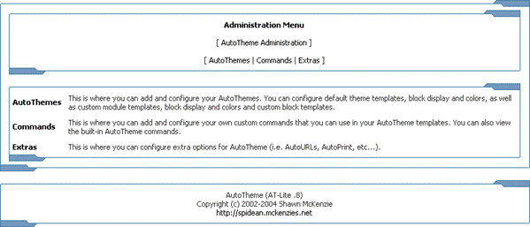
Figure 3 - AutoTheme Administration
AutoThemes
This is where you can add and configure your AutoThemes. Once you have selected a theme you can configure default theme templates, block display and colors, as well as Custom Module templates, block display, and colors. You may also configure custom templates for individual blocks and add some theme information to your theme.
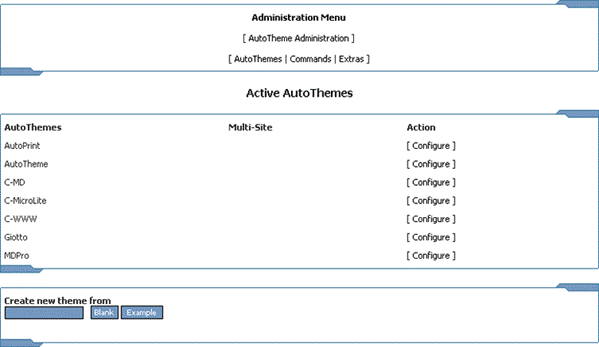
Figure 4 – AutoThemes
Creating a New Theme
You may also create a new theme by typing a name into the Create new theme from box and clicking either Blank, which creates a directory of this name and copies required files and directories (no templates) or Example, which is the same as Blank but also copies examples of all required templates (you can use these to get started).
Configuring a Theme
From this screen we have the option to configure our General settings, create and configure Custom Modules, create and configure Custom Blocks and configure the theme Information.
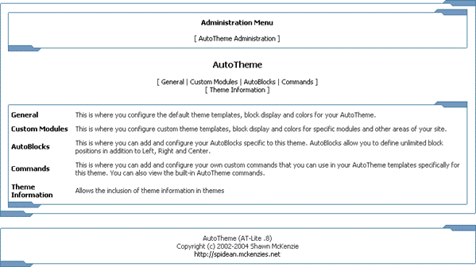
Figure 5 - Theme configuration
The “General” link holds the settings for all module pages that do not have custom settings. Every time we define a new Custom Module (customization) it will be created with the same settings as those contained in “General”, until we change them. Basically if there are no custom modules present, these are the settings that will apply.
General Configuration
We are now looking at a page with many settings broken into 3 areas:
ü Templates
ü Block Display
ü Styles
Remember that you can create custom settings for any module in this way, but this is the default configuration for the site.
Templates
The Page Template input box defines the file name of the template to be used for this module (as it is “General” it will display for all modules that do not have custom settings); if we wanted to we could have a completely different design from the homepage here.
Strip out head content (from <head> to </head>)? If this option is set to Yes, AutoTheme will automatically remove all data from between the head tags of the template. You can add code in the Default Head Content box (shown later) for elements you wish to be included between the head tags, i.e. JavaScript.
Summary Article defines what file to use as the article summary and its main use comes about when you want to have a different article summary defined for the topics and news module from that which is defined for the homepage.
Below this are First Alternating Summary and Second Alternating Summary where we define the templates that will be used to display the alternating summaries.
NOTE: This will not work if the theme developer has not created any files for an alternating summary. If they have included it as a feature you should see some files present and the box shouldn’t be a blank.
If this feature is not included and you want it, then create two new templates, “summary1.html” and “summary2.html” and copy and paste the code from summary.html into them. You then have an example to work from when creating your alternating summaries. Next, select them in the appropriate drop down boxes.
Use Alternating Summaries? This is where we can switch on the alternating summaries feature. If Yes, then the First Alternating Summary and Second Alternating Summary templates will be used and alternate. If No, then the Summary Article template will be used for all.
Below that we have Full Article. This is the template that is used when someone clicks the read more link, or views the full article from topics.
First Table and Second Table are templates containing a table design. These tables are not normally used by your theme or the templates, but by different modules. This mainly depends on the module that is being displayed, as not all modules incorporate this feature and many use them in different ways. You will however, find that most modules use these table definitions.
These tables can be called by your theme template using the following commands:
<-- [open-table] --> your HTML <-- [close-table] -->
<!-- [open-table2] --> your HTML <-- [close-table2] -->

Figure 6 - General (top section)
Block Templates
Here we define what template is called for each of our block areas. If you have a theme that uses different block designs for different block areas, here is where you define them. You might even have a completely different block design for a Custom Module.
Block Display
The Show Block by Default? settings are probably the most powerful feature of AutoTheme; the ability to define custom block layout for individual modules.
This feature requires that the theme incorporates all of these block areas. If the theme doesn’t have these block areas, this feature will not work. For example let’s say you have created custom settings for the download module. You decide that you want a poll to show in the left column only when the download module is active. You would select No for the Left block and select Yes for the block area that you only want to show for the Downloads module.
Styles
Style Sheet and Logo Image
We can also define a different Cascading Style Sheet or Logo Image. The style sheet will be included automatically and override any other styles. The logo can be displayed in a template with the following command:
<!-- [logo-image] -->
Colors
This is where we define different text and table colors for you theme. These colors are not used by your theme or the templates, but by different modules. This mainly depends on the module that is being displayed, as not all modules incorporate this feature and many use them in different ways. You will however, find that most modules use these color definitions.
You can add code in the Default Head Content box for elements you wish to be included between the head tags, i.e. JavaScript.
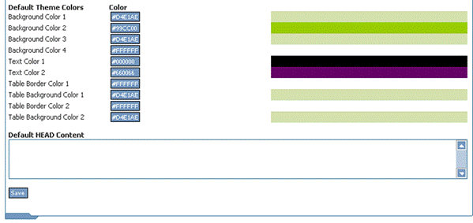
Figure 7 - General (bottom section)
Custom Blocks
Custom blocks allow you to add new block designs defined by there title. For example you might want your Login block to have a different design from all the rest of the blocks in the same position, let’s say Left. Different Custom Blocks can be defined in General and for each and every Custom Module.
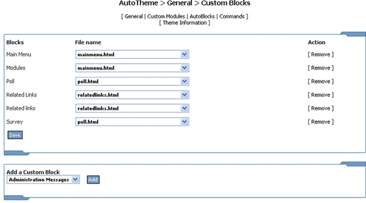
Figure 8 - Custom Blocks
To create a Custom Block first choose an existing block from the Add a custom Block drop down box, then click “Add”. You will now see that the block is present under Blocks. Now select the template containing the custom block design and click “Save”.
Custom Modules
Here is where you can customize the display of module pages. You may also configure and remove existing Custom Modules.
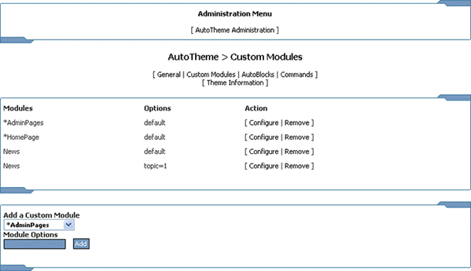
Figure 9 - Custom Modules
Configure takes you to the Custom Module configuration page which was discussed previously in General Configuration. The same concepts apply and the settings are identical.
Clicking Remove will remove all settings for the Custom Module. The module will revert back to the General Configuration settings.
Adding a Custom Module
By defining a Custom Module we can create a unique configuration that will only be used when the respective module pages are displayed. To define a new Custom Module select an existing module from the list then click “Add”.
Remember, if you have defined a Custom Module then those settings override the General settings and the General settings will have no effect when that module is displayed.
In addition to the modules that you have installed, there are 3 special Custom Modules that allow you to define custom settings for the home page (regardless of what module is in your home page), administration pages and all user pages (user account, registration, etc) respectively:
ü *HomePage
ü *AdminPages
Module Options
You can create a Custom Module with no Module Options and it will be labeled “default” and will apply to all pages of that module. You can also create a Custom Module with Module Options, something in the URL that differentiates a module page from the other pages of the same module. You can get this info by viewing the URL of the page for which you want to create a Custom Module.
Example: To create a Custom Module for the Downloads in category 1, the Module Options would be cid=1.
Example: To create a Custom Module for listing all articles in a specific topic, such as when you go to: modules.php?op=modload&name=News&file=index&catid=&topic=2
You would use topic=2 as your Module Options.
You can also combine the options to make it even more unique and flexible, for example:
file=somefile&option=10
AutoBlocks
Here we can define new block positions (in addition to Left, Right and Center) for our theme, which can then be used in General or Custom Modules. If you need to create a custom block layout or area of multiple blocks for a Custom Module, this is the place. Different AutoBlocks can be defined for each theme.
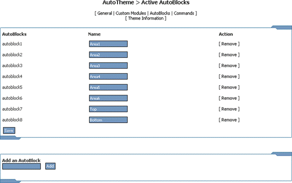
Figure 10 – AutoBlocks
To create a new AutoBlock position, enter a name for this position and click “Add”. After you create a new AutoBlock it will then appear in the AutoBlocks list. It will also be available in the General and all Custom Module configuration areas, where it can be assigned a template.
You can then assign blocks to these positions and display them in a template. To use an AutoBlock position in a template, use the following tag syntax:
This is the recommended way to call AutoBlocks in your template, as it will still work if you rename the AutoBlock: <!-- autoblock1-blocks] -->
This method is provided for backward compatibility and will not function if you rename the AutoBlock: <!-- [AutoBlock Name-blocks] -->
Commands
When you select Commands from the main AutoTheme menu, the commands apply to your entire site and can be used in any AutoTheme theme. They are not added to the theme so they will not be available if you distribute your theme to others.
There is a separate Commands link when configuring a theme. These commands are added to your theme and are thus available in the theme if it is distributed.
Commands are an easy way to add code snippets (PHP, JavaScript, and HTML) to your theme templates while retaining the ability to edit the template with a WYSIWYG HTML editor. These commands also allow you to further extend AutoTheme and your templates.
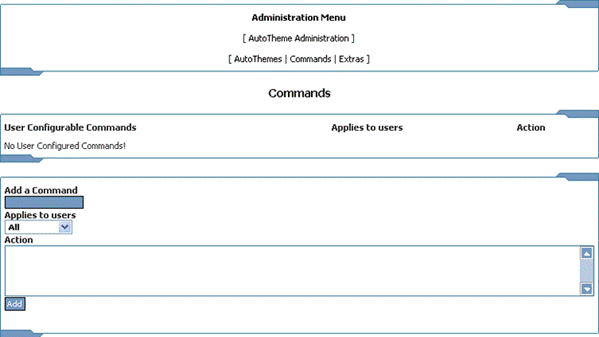
Figure 11 – Commands
For example you may want to add this code to your template:
<?php echo “AutoTheme is cool”; ?>
You would then give the command a name i.e. “widgets” and add this to the Add a Command input box, after which you would choose what user types could view the command, and then add the PHP code to the Action field.
From now on all you have to add to your template is:
<!-- [widgets] -->
And the result of the PHP will be automatically inserted when the theme is displayed. The same can be done for JavaScript and HTML.
Extras
Extras are plug-ins for AutoTheme. Many nifty Extras are included with AutoTheme and additional Extras can be coded by you or obtained from others. A full Developer Reference is available or will be available shortly.
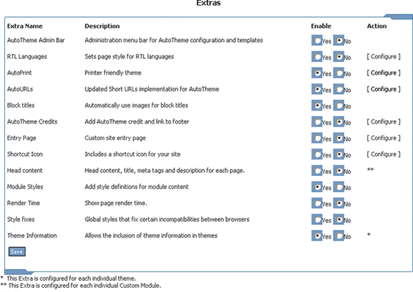
Figure 12 – Extras
Global Extras
Global Extras are applicable to the entire site when an AutoTheme theme is being used.
AutoTheme Admin Bar
This Extra displays an Administration Bar at the top of your site, viewable only to Administrators. This bar has links to display different AutoTheme configuration settings and edit the current configuration and template.
Figure 13 - AutoTheme Admin Bar
RTL Languages
For now, this area lets you define what languages should cause the theme to display Right-To-Left (RTL). Some languages, Arabic, Farsi and Hebrew (that are already added here) read from right to left, and AutoTheme will adjust the theme accordingly when the site language or the user’s selected language is one of these. The text is printed RTL and other objects (tables, images, form inputs, etc.) are aligned to the right and all controls including the scroll bar are positioned on the left.
To add a language that reads RTL, use the three letter abbreviation for the language as defined by ISO 639-2. The list of abbreviations can be found at http://lcweb.loc.gov/standards/iso639-2/englangn.html.
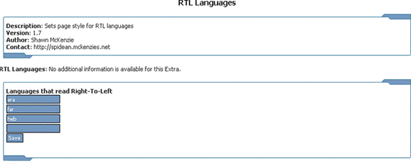
Figure 14 - RTL Languages
AutoPrint
This Extra allows you to set a theme that will be used for a printer friendly page. A sample AutoPrint theme is included. You can display a link to the printer friendly page by including <!-- [print-link] --> in your template.
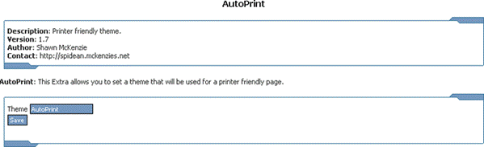
Figure 15 - AutoPrint
AutoURLs
This Extra requires the Apache web server with mod_rewrite enabled and one of the included .htaccess files present in your CMS root directory. AutoURLs converts URLs on your site into shorter URLs that are friendlier and search engine optimized.
You can choose the extension that is used for the new URLs. Choose the appropriate .htaccess file from: “htm.htaccess”, “html.htaccess” or “phtml.htaccess” and rename it to “.htaccess.”
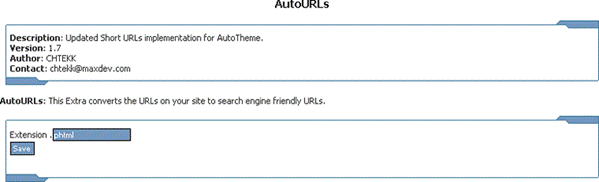
Figure 16 - AutoURLs
Block Titles
This Extra when enabled, will automatically include images to use as block titles and allows you to use language defines as titles for blocks.
If you have used a language define as the block title and you have defined that in a language file, then the translation will be used.
If a gif, jpg or png image exists that is the same name as the block (lowercase, alphanumeric, no spaces), then it will be used as the block title. AutoTheme looks for the images in “themes/YOURTHEME/images/lang/CURRENTLANG/” first and then if not found it looks in “themes/YOURTHEME/images/”.
AutoTheme Credits
This Extra automatically adds an AutoTheme HTML Theme System image or text link to the footer of each page.
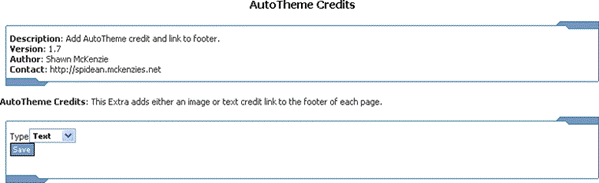
Figure 17 - AutoTheme Credits
Entry Page
This Extra allows you to use a template and set an entry that the designated types of visitors will see on their initial visit. The template will first be looked for in “themes/YOURTHEME/templates/” and then if not found it will use the one in “modules/AutoTheme/templates/”.
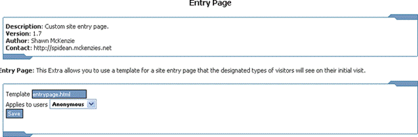
Figure 18 - Entry Page
Template to use as the Entry Page
Applies to users (which users should see this Entry Page upon their first visit)
Shortcut Icon
This Extra automatically includes a shortcut or favorite icon for your site. This icon must be a 16x16 favicon.ico file of type .ico located in your CMS root directory.
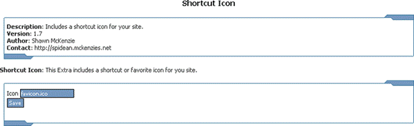
Figure 19 - Shortcut Icon
Module Styles
This Extra wraps the module’s output in a div tag with the following class and id that can be used in your style sheets to style the output:
<div id=”modulename” class=”module”>
Render Time
This Extra adds to the footer of each page, the time that it took to render the page in seconds.
Style Fixes
For now, this Extra adds styles that help the pages display the same in most browsers. This Extra may go away and it is advisable to use styles in your style sheets instead.
Themes on a Date
This Extra allows you to set dates for when specific themes are displayed. The most recent date that has already occurred is used.
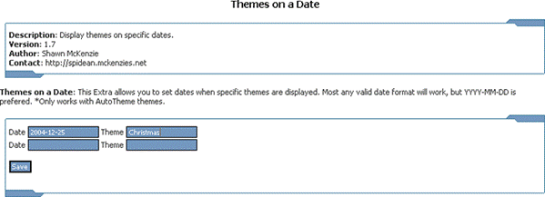
Figure 20 - Themes on a Date
Date to activate the theme (YYYY-MM-DD)
Theme to activate at the specified time (only works with AutoTheme themes)
Theme Time
This Extra allows you to set times of day for when specific themes are displayed. The most recent time that has already occurred is used.
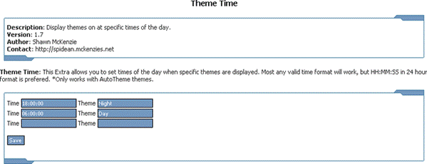
Figure 21 - Theme Time
Time to activate the theme (HH:MM:SS in 24 hour format)
Theme to activate at the specified time (only works with AutoTheme themes)
Theme Extras
Theme Extras are applicable to each individual theme and configured separately for each theme.
Theme Information
This Extra allows you to enter information about the theme and optionally have it included in the HTML source of all pages that use this theme.
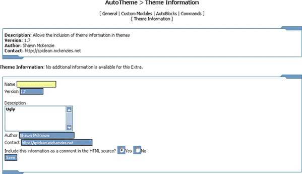
Figure 22 – Theme Information
Name of the theme (determined by the directory name).
Version is whatever version number has been assigned to the theme.
Description could contain any description, copyright information, etc.
Author of the theme is obviously the author’s name.
Contact may contain the email or website of the theme author. This can help if you need support for the theme.
Include this information as a comment in the HTML source? Choosing Yes here will add the above information as an HTML comment to the HTML source of all pages that use this theme.
Module Extras
Module Extras are applicable to the General (default) settings and each individual Custom Module and are configured separately for each.
Head Content
This Extra allows you to specify a title, meta keywords and meta description for each page on your site, thus improving search engine indexing and rankings. The current CMSs normally use the same title, keywords and description for each page.
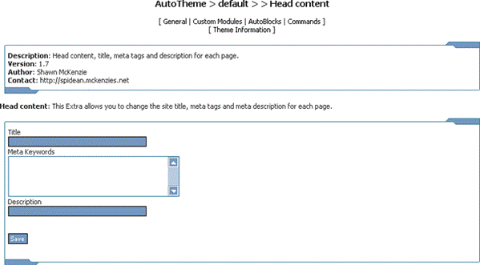
Figure 23 - Head Content
Title of the page (between the <title> and </title> tags)
Meta Keywords for the page (the content of the <meta name="KEYWORDS" tag)
Description for the page (the content of the <meta name="DESCRIPTION" tag)
List of Commands
|
Command |
Description |
|
|
|
|
Global Commands |
|
|
theme-path |
The path to your theme |
|
image-path |
The path to the images/ directory in your theme |
|
footer-msg |
Displays the footer message |
|
open-table |
Opens a table based on the first table template |
|
open-table2 |
Opens a table based on the second table template |
|
close-table |
Closes a table based on the first table template |
|
close-table2 |
Closes a table based on the second table template |
|
user |
Displays the current username |
|
user-welcome |
Displays Welcome username |
|
user-links |
Displays links for users to login, register or logout |
|
logo-image |
Displays the default logo image or the one for the Custom Module |
|
color1 |
Background Color 1 from admin |
|
color2 |
Background Color 2 from admin |
|
color3 |
Background Color 3 from admin |
|
color4 |
Background Color 4 from admin |
|
color5 |
Text Color 1 from admin |
|
color6 |
Text Color 2 from admin |
|
color7 |
Table Border Color 1 from admin |
|
color8 |
Table Background Color 1 from admin |
|
color9 |
Table Border Color 2 from admin |
|
color10 |
Table Background Color 2 from admin |
|
site-logo |
Displays the site logo |
|
site-name |
Displays the site name |
|
site-slogan |
Displays the site slogan |
|
date |
Displays the current date |
|
time |
Displays the current time |
|
banners |
Displays the standard banners |
|
banners-typeX |
X=Banner type: Displays banners of the specified type 1-99 |
|
search |
Displays a search box |
|
Command |
Description |
|
|
|
|
Block Commands |
|
|
block-title |
Displays the block title in a block template |
|
block-content |
Displays the block content in a block template |
|
left-blocks |
Displays the blocks assigned to the left position |
|
center-blocks |
Displays the blocks assigned to the center position |
|
right-blocks |
Displays the blocks assigned to the right position |
|
Block Name |
Displays Block Name, where Block Name = a specific block name such as Who’s Online |
|
autoblockX-blocks |
Displays the blocks assigned to autoblockX position where X = the autoblock number |
|
AutoBlock Name-blocks |
Displays the blocks assigned to AutoBlock Name position, where Auto Block Name = a specific autoblock name such as Area1 (provided for backward compatibility) |
|
Autoblock name-blocks |
Displays the blocks assigned to auto block position, where autoblock name= a specific autoblock name all lowercase such as area1 (provided for backward compatibility) |
|
|
|
|
News Commands |
|
|
cat-title |
Display the category and title of a News article |
|
posted-by |
Display Posted By and the user who posted the article |
|
posted-date-time |
Display the date and time that the article was posted |
|
topic-image |
Display the image for the article’s topic |
|
article-summary |
Display the summary or home text of the article |
|
article-full |
Display the entire text of the article, including summary text, extended text and notes |
|
article-notes |
Display the article notes |
|
article-more |
Display the Read more link with print and send to a friend icons |
|
article-reads |
Display the number of times the article has been read |
|
article-edit-del |
Display links to edit and delete the article (admin only) |
|
Command |
Description |
|
|
|
|
news:text:aid |
|
|
news:text:bodytext |
|
|
news:text:catthemeoverride |
|
|
news:text:cid |
|
|
news:text:cattitle |
|
|
news:text:comments |
|
|
news:text:counter |
|
|
news:text:hometext |
|
|
news:text:informant |
|
|
news:text:notes |
|
|
news:text:sid |
|
|
news:text:themeoverride |
|
|
news:text:tid |
|
|
news:text:time |
|
|
news:text:title |
|
|
news:text:topicname |
|
|
news:text:topicimage |
|
|
news:text:topictext |
|
|
news:text:tcounter |
|
|
news:text:unixtime |
|
|
news:text:withcomm |
|
|
news:text:topicid |
|
|
news:text:topic |
|
|
news:text:catid |
|
|
news:text:version |
|
|
news:text:longdatetime |
|
|
news:text:briefdatetime |
|
|
news:text:longdate |
|
|
news:text:briefdate |
|
|
news:text:catandtitle |
|
|
news:text:maintext |
|
|
news:text:fulltext |
|
|
news:html:bodytext |
|
|
news:html:bytesmore |
|
|
news:html:category |
|
|
news:html:comment |
|
|
news:html:hometext |
|
|
news:html:notes |
|
|
Command |
Description |
|
|
|
|
news:html:searchtopic |
|
|
news:html:print |
|
|
news:html:readmore |
|
|
news:html:send |
|
|
news:html:title |
|
|
news:html:version |
|
|
news:html:more |
|
|
news:html:catandtitle |
|
|
news:html:maintext |
|
|
news:html:fulltext |
|
|
news:url:category |
|
|
news:url:comment |
|
|
news:url:fullarticle |
|
|
news:url:searchtopic |
|
|
news:url:print |
|
|
news:url:send |
|
|
news:url:version |
|
|
|
|
|
Extra Commands |
* Only if the Extra is available for your CMS |
|
print-link |
Displays a link to a printer friendly page if the AutoPrint Extra has been enabled |
|
|
|
|
CMS Commands |
MD-Pro, PostNuke, eNvolution |
|
config:debug |
Site configuration information. |
|
config:version_num |
|
|
config:version_id |
|
|
config:version_sub |
|
|
config:startpage |
|
|
config:adminmail |
|
|
config:sitename |
|
|
config:slogan |
|
|
config:timezone_offset |
|
|
config:seclevel |
|
|
config:banners |
|
|
config:language |
|
|
config:locale |
|
|
config:censormode |
|
|
config:censorlist |
|
|
Command |
Description |
|
|
|
|
user:uid |
User information. |
|
user:name |
|
|
user:uname |
|
|
user:email |
|
|
user:femail |
|
|
user:url |
|
|
user:avatar |
|
|
user:regdate |
|
|
user:icq |
|
|
user:occ |
|
|
user:from |
|
|
user:intrest |
|
|
user:sig |
|
|
user:viewemail |
|
|
user:theme |
|
|
user:aim |
|
|
user:yim |
|
|
user:msnm |
|
|
user:pass |
|
|
user:storynum |
|
|
user:umode |
|
|
user:uorder |
|
|
user:thold |
|
|
user:noscore |
|
|
user:bio |
|
|
user:ublockon |
|
|
user:ublock |
|
|
user:commentmax |
|
|
user:counter |
|
|
user:timezone_offset |
|
|
|
|
Command |
Description |
|
|
MD-Pro, CPG-Nuke |
|
block-control |
Displays minimize and maximize button in a block |
|
|
|
|
|
PHP-Nuke, CPG-Nuke |
|
admin-messages |
Displays the Administration Messages |
|
public-messages |
Displays the public messages |
|
|
|
List of Figures
Figure 2 - CMS Layout with AutoBlocks
Figure 3 - AutoTheme Administration
Figure 5 - Theme configuration
Figure 6 - General (top section)
Figure 7 - General (bottom section)
Figure 13 - AutoTheme Admin Bar
Copyright
Copyright © 2004 Shawn McKenzie. All rights reserved.
No part of this document may be reproduced, stored in a retrieval system, or transmitted, in any form or by any means, electronic, mechanical, recording, or otherwise, without the prior written permission of Shawn McKenzie.
The content of this document is furnished for informational use only, is subject to change without notice, and should not be construed as a commitment by the authors or copyright holder. The authors and copyright holder assume no responsibility or liability for any errors or inaccuracies that may appear in the informational content contained in this document.
All names and trademarks are property of their respective companies.